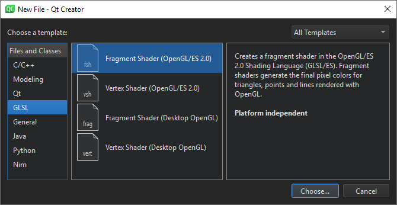

Creating Projects
Creating a project enables you to:
- Group files together
- Add custom build steps
- Include forms and resource files
- Specify settings for running applications
Setting up a new project in Qt Creator is aided by a wizard that guides you step-by-step through the project creation process. The wizards prompt you to enter the settings needed for that particular type of project and create the necessary files for you. You can add your own custom wizards to standardize the way subprojects and classes are added to a project.
Most Qt Creator project wizards enable you to choose the build system to use for building the project: qmake, CMake, or Qbs. If you are not presented with a choice, the project is set up to use qmake.
You can use wizards also to create plain C or C++ projects that use qmake, Qbs, or CMake, but do not use the Qt library.
In addition, you can import projects as generic projects that do not use qmake, Qbs, or CMake. This enables you to use Qt Creator as a code editor and to fully control the steps and commands used to build the project.
You can install tools for devices as part of Qt distributions. The kits and build and run settings for the installed device types are set up automatically. However, you might need to install and configure some additional software on the devices to be able to connect to them from the development PC.
Selecting the Build System
Most Qt Creator project wizards enable you to choose the build system to use for building the project: qmake, CMake, or Qbs. If you are not presented with a choice, the project is set up to use qmake.
qmake is a cross-platform system for build automation that helps simplify the build process for development projects across different platforms. qmake automates the generation of build configurations so that only a few lines of information are needed to create each configuration. qmake is installed and configured when you install Qt. To use one of the other supported build systems, you need to set it up.
CMake is an alternative to qmake for automating the generation of build configurations. For more information, see Setting Up CMake.
Qbs is an all-in-one build tool that generates a build graph from a high-level project description (like qmake or CMake do) and executes the commands in the low-level build graph (like make does). For more information, see Setting Up Qbs.
To change the location of the project directory, and to specify settings for building and running projects, select Tools > Options > Build & Run > General. The CMake tab contains additional settings for CMake. You can find more settings for CMake and Qbs in Tools > Options > Kits > CMake and Qbs.
To specify build and run settings for different target platforms, select Projects. For more information on the options you have, see Specifying Build Settings.
Using Project Wizards
In the first step, you select a template for the project. You can filter templates (1) to view only those that apply to a particular target platform.

Next, you select a location for the project and specify settings for it.
When you have completed the steps, Qt Creator automatically generates the project with required headers, source files, user interface descriptions and project files, as defined by the wizard.
For example, if you choose to create a Qt Quick application, Qt Creator generates a QML file that you can modify in the Design mode.
Selecting Project Type
You can use wizards to create following types of projects:
- Applications
- Qt Widgets Application
Use Qt Designer forms to design a Qt widget based user interface for the desktop and C++ to implement the application logic
- Qt Quick Application - Empty
Create an empty Qt Quick application that uses Qt Quick 2 types.
You can build the application and deploy it to desktop, embedded, and mobile target platforms.
- Qt Quick Application - Scroll, Stack, or Swipe
Create a Qt Quick application that uses Qt Quick Controls to implement a scrollable list (requires Qt 5.9 or later) or a set of pages with a stack-based or swipe-based navigation model (requires Qt 5.7 or later).
- Qt Console Application
Use a single main.cpp file
- Qt for Python Application - Empty or Window
Create a Qt for Python application that contains only the main code for a QApplication or create one that contains an empty window.
- Qt Widgets Application
- Libraries
- C++ Library
Shared or static C++ library based on qmake
- Qt Quick 2 Extension Plugin
C++ plugin that makes it possible to offer extensions that can be loaded dynamically into Qt Quick 2 applications by using the QQmlEngine class
- Qt Creator Plugin
- C++ Library
- Other Projects
- Auto Test Project
Projects with boilerplate code for a Qt or Google test. For more information, see Creating Tests.
- Qt Quick UI Prototype
Use a single QML file that contains the main view. You can review Qt Quick UI prototypes in a preview tool and you need not build them. Qt Quick UI prototypes cannot be deployed to embedded or mobile target platforms. For those platforms, create a Qt Quick application instead.
- Qt Custom Designer Widgets
Custom Qt Designer widget or widget collection
- Empty qmake Project
Empty qmake project that is based on qmake but does not use any default classes
- Subdirs Project
Subprojects that enable you to structure your qmake projects as a tree hierarchy
- Code Snippet
Creates a qmake project from a code snippet. When fixing bug reports that contain a code snippet, you can place the code snippet into a project to compile and check it.
- Auto Test Project
- Non-Qt Projects
- Plain C or C++ Application
Plain C or C++ application that uses qmake, Qbs, or CMake but does not use the Qt library
- Nim Application (experimental)
Nim application that uses qmake or CMake but does not use the Qt library
Note: The Nim Application option becomes visible after you enable the experimental Nim plugin. Select Help > About Plugins > Other Languages > Nim, and then restart Qt Creator.
- Plain C or C++ Application
- Import Project
- Project from version control
Import a project from a supported version control system. For more information on how version control systems are integrated in Qt Creator, see Using Version Control Systems
- Import as qmake Project
Import an existing project that does not use any of the supported build systems: qmake, Qbs, CMake, or Autotools. The wizard creates a qmake .pro file, which enables you to use Qt Creator as a code editor and as a launcher for debugging and analysis tools. However, if you want to build the project, you might need to edit the generated .pro file.
- Import Existing Project
Import an existing project that does not use any of the supported build systems: qmake, Qbs, CMake, or Autotools. This enables you to use Qt Creator as a code editor
- Project from version control
To create a new project, select File > New File or Project and select the type of your project. The contents of the wizard dialogs depend on the project type and the kits that you select in the Kit Selection dialog. Follow the instructions of the wizard.
For examples of creating different types of projects, see Tutorials.
For more information about creating Qt Quick projects, see Creating Qt Quick Projects.
Adding Files to Projects
You can use wizards also to add individual files to your projects. You can create the following types of files:
- C++
C++ class, source, or header files that you can use to write the application logic in both Qt Quick projects and Qt widget based projects
- Qt
- Qt item model source and header files that you can use to create classes derived from QAbstractItemModel, QAbstractTableModel, or QAbstractListModel.
- Qt Designer forms and Qt Designer form classes, which specify parts of user interfaces in Qt widget based projects
- Qt resource files, which allow you to store binary files in the application executable
- QML files, which specify items in Qt Quick projects. QML File (Qt Quick 2) creates a QML file that imports Qt Quick 2.0 and Qt Quick UI File creates an UI form (.ui.qml) and the corresponding QML file.
- JavaScript files that you can use to write the application logic in Qt Quick projects
- Models and state charts
- Universal Modeling Language (UML) style models with structured diagrams. However, the model editor uses a variant of UML and provides only a subset of properties for specifying the appearance of model elements. For more information, see Modeling.
- State Chart XML (SCXML) files that contain boilerplate code for state machines. You can use the classes in the Qt SCXML module to embed state machines created from the files in Qt applications.
- GLSL
GLSL files that define fragment and vertex shaders in both Qt Quick projects and Qt widget based projects
- General
- Empty files
- Scratch buffers that use temporary files. You can create this type of files for temporarily storing information that you do not intend to save
- Java
Java class files that you can use to create Java classes.
- Python
Python class and source files that you can use to create Python classes and scripts with UTF-8 encoding.
- Nim (experimental)
- Nim script files.
- Nim source files with UTF-8 encoding.
Creating C++ Classes
The C++ Class Wizard allows you to create a C++ header and source file for a new class that you can add to a C++ project. Specify the class name, base class, and header and source files for the class.
The wizard supports namespaces. To use a namespace, enter a qualified class name in the Class name field. For example: MyNamespace::MySubNamespace::MyClass.

The names of the header and source file are based on the class name. To change the default suffix of a file, select Tools > Options > C++ > File Naming.

In the License template field, you can use predefined wizard variables to specify the path and filename of the license to use in the source and header files.
You can create your own project and class wizards. For more information, see Adding New Custom Wizards.
Creating Resource Files
Qt Creator supports the Qt Resource System, which is a platform-independent mechanism for storing files in the application's executable.
The wizard creates a resource collection file (.qrc) that you can manage in the resource editor.
Select Add > Add Files to locate and add individual files.
By default, resources are accessible in the application under the same file name as they have in the source tree, with a :/ prefix, or by a URL with a qrc scheme. To specify a path prefix for all files in the .qrc file, select Add > Add Prefix or enter the prefix in the Prefix field.
Some resources need to change based on the user's locale, such as translation files or icons. You can specify a locale in the Language field.
Select Remove to remove the selected file from the resource collection. In the Remove File dialog, select the Delete file permanently check box to remove the file from the file system. To remove files that cannot be found in the file system, select Remove Missing Files.
The above functions are also available in the context menu in the Projects view.
Creating Qt for Python Applications
Qt for Python enables you to use Qt 5 API in Python applications. You can use the PySide2 module to gain access to individual Qt modules, such as Qt Core, Qt GUI, and Qt Widgets.
The Qt for Python Application wizards generate a .pyproject file that lists the files in the Python project and a .py file that contains some boilerplate code.
The .pyproject files are JSON-based configuration files that replace the previously used .pyqtc configuration files. You can still open and use .pyqtc files, but we recommend that you choose .pyproject files for new projects.
The Window wizard adds the following imports to the main.py file to provide access to the QApplication and QMainWindow classes in the Qt Widgets module:
import sys from PySide2.QtWidgets import QApplication, QMainWindow
The Window wizard also adds a MainWindow class that inherits from QMainWindow:
class MainWindow(QMainWindow):
def __init__(self):
QMainWindow.__init__(self)
Next, the Window wizard adds a main function, where it creates a QApplication instance. As Qt can receive arguments from the command line, you can pass any arguments to the QApplication object. Usually, you do not need to pass any arguments, and you can use the following approach:
if __name__ == "__main__":
app = QApplication([])
...
Next, the Window wizard instantiates the MainWindow class and shows it:
window = MainWindow() window.show() ...
Finally, the Window wizard calls the app.exec_() method to enter the Qt main loop and start executing the Qt code:
sys.exit(app.exec_())
The Empty wizard adds similar code to the main.py file, but it does not add any classes, so you need to add and instantiate them yourself.
For examples of creating Qt for Python applications, see Qt for Python Examples and Tutorials.
Creating OpenGL Fragment and Vertex Shaders
Qt provides support for integration with OpenGL implementations on all platforms, which allows you to display hardware accelerated 3D graphics alongside a more conventional user interface. For more information, see Qt GUI.
You can use the QOpenGLShader class to compile OpenGL shaders written in the OpenGL Shading Language (GLSL) and in the OpenGL/ES Shading Language (GLSL/ES). QOpenGLShader and QOpenGLShaderProgram shelter you from the details of compiling and linking vertex and fragment shaders.
You can use Qt Creator code editor to write fragment and vertex shaders in GLSL or GLSL/ES. The code editor provides syntax highlighting and code completion for the files.

Displaying Additional File Types in Projects Pane
Qt Creator determines whether to display files from the project folder in the Projects pane depending on the file type (.pro, .pri, .cpp, .h, .qrc, and so on). To display other types of files, edit the project file. Add filenames as values of the DISTFILES variable. You can also use wildcards.
For example, the following code specifies that text files are displayed in the Projects pane:
DISTFILES += *.txt
This also makes the files available in the Locator.
Adding Subprojects to Projects
In addition to Qt libraries, you can link your application to other libraries, such as system libraries or your own libraries. Further, your own libraries might link to other libraries. To be able to compile your project, you must add the libraries to your project. This also enables code completion and syntax highlighting for the libraries. The procedure of adding a library to a project depends on the build system that you use.
When you create a new project, you can add it to another project as a subproject in the Project Management dialog. However, the root project must specify that qmake uses the subdirs template to build the project.
To create a root project, select File > New File or Project > Other Project > Subdirs Project > Choose.
On the Summary page, select Finish & Add Subproject to create the root project and to add another project, such as a C++ library.
The wizard creates a project file (.pro) that defines a subdirs template and the subproject that you add as a value of the SUBDIRS variable. It also adds all the necessary files for the subproject.
To add more subprojects, right-click the project name in the Projects pane, and select New Subproject in the context menu.
To remove subprojects, right-click the project name in the Projects pane, and select Remove Subproject in the context menu.
To specify dependencies, use the Add Library wizard. For more information, see Adding Libraries to Projects.
Binding Keyboard Shortcuts to Wizards
If you use a wizard regularly, you can bind a custom keyboard shortcut to it. Triggering this keyboard shortcut will directly open the wizard without the need to navigate to File > New File or Project.
Keyboard shortcuts for wizards can be set in Tools > Options > Environment > Keyboard > Wizard. All wizard actions start with Impl there.